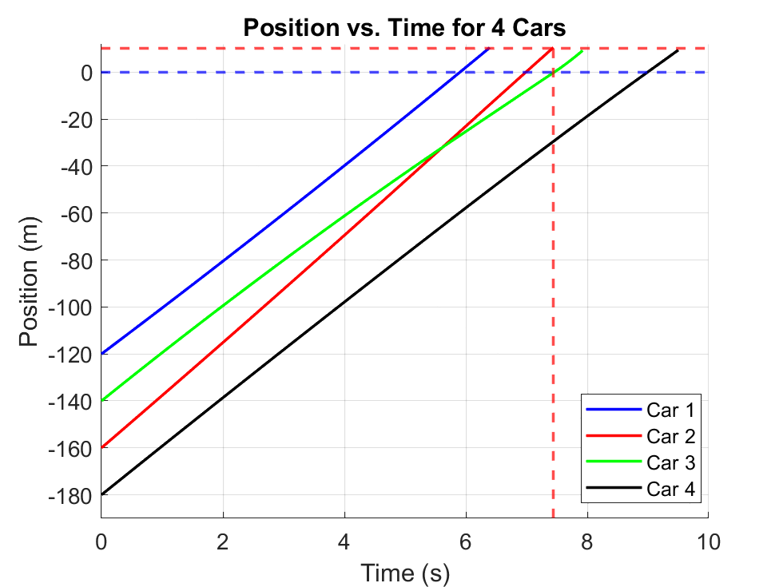
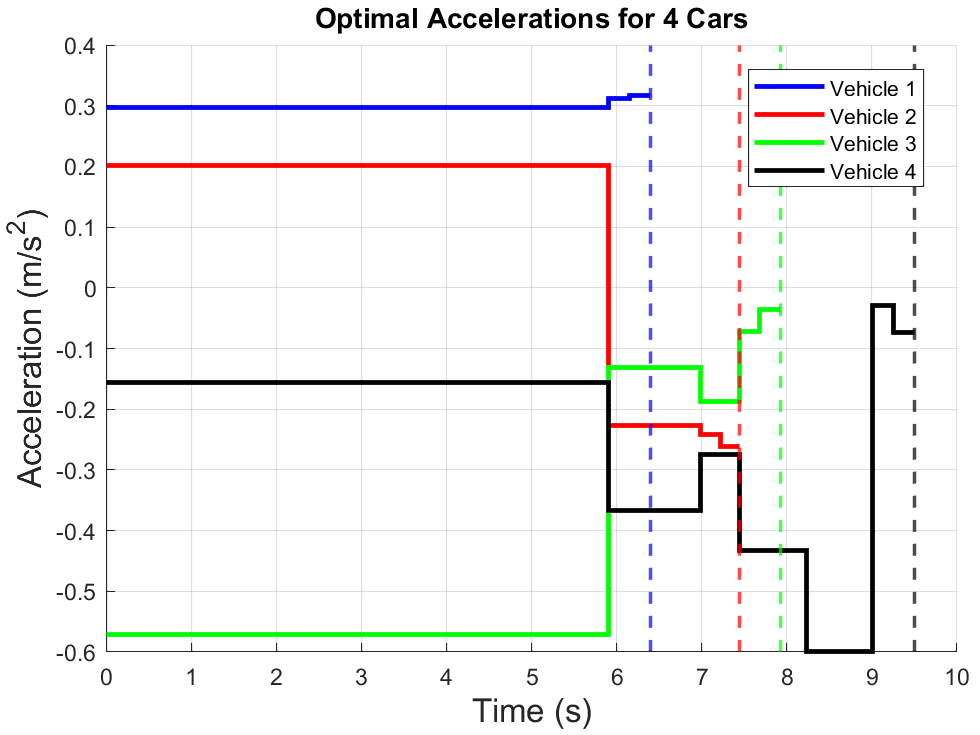

ECE 623 Course Project · Spring 2024
Safe Intersection Scheduling — Paper Reproduction
Reproduction of a fixed-precedence vehicle-coordination formulation from a 2018 European Control Conference paper, focusing on nonlinear scheduling, safety constraints, and a four-vehicle numerical case.
Reproduction Scope
- Reconstructed the paper's time discretization, objective, and feasibility constraints.
- Implemented the nonlinear program for a fixed vehicle-crossing order.
- Evaluated a four-vehicle, two-lane case using position trajectories and piecewise-constant acceleration profiles.
Scope note: This is a course reproduction of a published formulation. It does not claim a new scheduling method or a full reimplementation of the paper's distributed ALADIN architecture.
Problem Formulation
Fixed-Precedence Intersection Scheduling
The crossing order is given. The optimization schedules when each vehicle enters and exits the shared intersection region. Piecewise- constant acceleration variables are included to keep the timing schedule physically feasible.
Timing variables
Entry and exit times, tiin and tiout, for each vehicle.
Feasibility variables
Piecewise-constant accelerations ai,k and auxiliary variables for rear-end separation.
Objective
Balance Speed Tracking, Effort, and Smoothness
min J = Σi [ QiΣk(vi,k − viref)2 + RiΣkai,k2 + SiΣk(ai,k − ai,k−1)2 ]
Reference-speed deviation
Keeps each vehicle close to its desired traveling speed.
Acceleration effort
Discourages unnecessarily aggressive acceleration and braking.
Acceleration variation
Penalizes abrupt changes between consecutive time segments.
Constraints
Scheduling and Safety Requirements
- Positive time segments
- Every discretized interval must have positive duration.
- Kinematic consistency
- Position and velocity follow the discretized motion equations for each acceleration segment.
- Operating bounds
- Vehicle speed and acceleration remain within prescribed limits.
- Intersection occupancy
- The scheduled exit of one vehicle precedes the next vehicle's entry, so at most one vehicle occupies the conflict region.
- Rear-end separation
- Neighboring vehicles in the same lane maintain at least the required safe distance throughout the approach.
- Boundary conditions
- Each trajectory reaches the prescribed intersection entry and exit positions at its scheduled times.
Reproduced Numerical Case
Four Vehicles on Two Lanes
The selected case evaluates four vehicles approaching from two directions under a fixed crossing order and a shared intersection occupancy constraint.


Validation: The reproduced case satisfies the one-vehicle-at-a-time intersection schedule, prescribed entry and exit positions, rear-end separation, and bounded acceleration requirements.